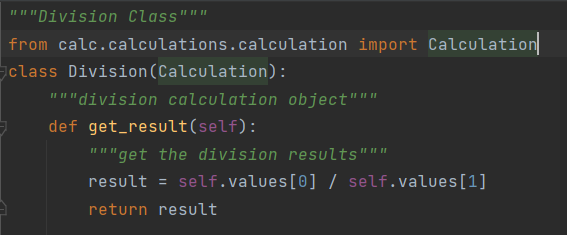

SOLID is a mnemonic abbreviation for a set of design principles created for software development in object-oriented languages. The principles in SOLID are intended to foster simpler, more robust and updatable code from software developers. Each letter in SOLID corresponds to a principle for development:
Object-Oriented Programming (OOP) is a way of writing programs by using objects to represent data and functions. This type of programming with objects makes it easy to communicate with one another and exchange data. Developers can also easily reuse the code.
SOLID is an acronym that stands for the following:
Let's go through each principle one by one:
This principle states that "a class should have only one reason to change" which means every class should have a single responsibility or single job or single purpose. Take the example of developing software. The task is divided into different members doing different things as front-end designers do design, the tester does testing and backend developer takes care of backend development part then we can say that everyone has a single job or responsibility.
Most of the time it happens that when programmers have to add features or new behavior they implement everything into the existing class which is completely wrong. It makes their code lengthy, complex and consumes time when later something needs to be modified. Use layers in your application and break God classes into smaller classes or modules.
Here we can see that this class is solely responsible for creating the division object, and storing the values passed to it from the Calculation function. If the get_result method is called, then it will return the division of the values.
This principle states that "software entities (classes, modules, functions, etc.) should be open for extension, but closed for modification " which means you should be able to extend a class behavior, without modifying it.
Suppose developer A needs to release an update for a library or framework and developer B wants some modification or add some feature on that then developer B is allowed to extend the existing class created by developer A but developer B is not supposed to modify the class directly. Using this principle separates the existing code from the modified code so it provides better stability, maintainability and minimizes changes as in your code.
Suppose we want to add square function in above calculation class. Here we don't need to modifiy our code but we only adding function of square. Adding the square class would not cause any change to any of the existing code, and new methods can simply be added at the end of each class.
The principle was introduced by Barbara Liskov in 1987 and according to this principle "Derived or child classes must be substitutable for their base or parent classes". This principle ensures that any class that is the child of a parent class should be usable in place of its parent without any unexpected behavior.
The main idea behind Liskov Subtitution Principle is that, for any class, a client should be able to use any of its subtypes indistinguishably, without even noticing, and therefore without compromising the expected behavior at runtime. This means that clients are completely isolated and unaware of changes in the class hierarchy.
In this example calculation is Parent class. Division is the child class which is derived from parent class Calculation.
Here, we can see that the Division methods makes use of all the qualities of the Calculation class:
The division class uses the "create" method to create an division object The values passed to the parent are converted to a list that is saved to the division object The division class uses the values to perform its unique function
This principle is the first principle that applies to Interfaces instead of classes in SOLID and it is similar to the single responsibility principle. It states that "do not force any client to implement an interface which is irrelevant to them ". Here your main goal is to focus on avoiding fat interface and give preference to many small client-specific interfaces. You should prefer many client interfaces rather than one general interface and each interface should have a specific responsibility
Make fine grained interfaces that are client specific Clients should not be forced to depend upon interfaces that they do not use. This principle deals with the disadvantages of implementing big interfaces.
This class could still create an object, but when stored to the history, it will simply remain an operation object, and it would not specify which operation occurred.
Dependency should be on abstractions not concretions. High-level modules should not depend upon low-level modules. Both low and high level classes should depend on the same abstractions. Abstractions should not depend on details. Details should depend upon abstractions.
There comes a point in software development where our app will be largely composed of modules. When this happens, we have to clear things up by using dependency injection. High-level components depending on low-level components to function. To create specific behavior you can use techniques like inheritance or interfaces.
The above lines simply state that if a high module or class will be dependent more on low-level modules or class then your code would have tight coupling and if you will try to make a change in one class it can break another class which is risky at the production level. So always try to make classes loosely coupled as much as you can and you can achieve this through abstraction. The main motive of this principle is decoupling the dependencies so if class A changes the class B doesn't need to care or know about the changes.
A key principle of software development and architecture is the notion of separation of concerns. At a low level, this principle is closely related to the Single Responsibility Principle of object oriented programming. The general idea is that one should avoid co-locating different concerns within the design or code. For instance, if your application includes business logic for identifying certain noteworthy items to display to the user, and your application formats such items in a certain way to make them more noticeable, it would violate separation of concerns if both the logic for determining which items were noteworthy and the formatting of these items were in the same place. The design would be more maintainable, less tightly coupled, and less likely to violate the Don't Repeat Yourself principle if the logic for determining which items needed formatted were located in a single location (with other business logic), and were exposed to the user interface code responsible for formatting simply as a property.
At an architectural level, separation of concerns is a key component of building layered applications. In a traditional N-tier application structure, layers might include data access, business logic, and user interface. More modern N-tier application designs might include a core domain model and separate infrastructure modules in addition to one or more front end services and/or user interfaces. Web pages, to a greater or lesser degree, separate concerns relating to structure, logic, and formatting through the use of HTML, JavaScript, and CSS. At a lower level, the networking model used by the Internet is broken into a series of layers each with specific concerns and responsibilities, and demonstrates how separation of concerns can be effectively applied.
In addition to separating logic across programming layers, one can also separate concerns along application feature sets. Applications may be written to allow functionality to be added or removed in a modular fashion, and many commercial products support this functionality as a means of separating features across product SKUs or to allow third parties to create plug-ins.
Separation of Concerns tends to be a natural consequence of following the Don't Repeat Yourself principle, since of necessity abstractions must be built to encapsulate concepts that would otherwise be repeated throughout the application. As long as these abstractions are logically grouped and organized, then Separation of Concerns should be achieved.
Student at New Jersey Institute of Technology (NJIT) pursuing MS in Computer Science (CS).
This Article basically explain SOLID Principles and Separation of Concerns in python with examples.
This article is the part of a Project towards credits for IS601 - Web Systems Development at New Jersey Institute of Technology